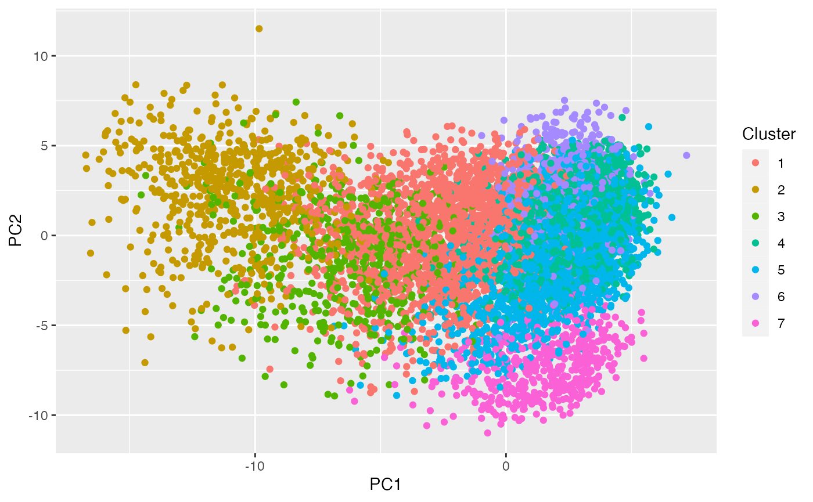

Before using this tutorial, we recommend that you read through our ``introduction to count splitting” tutorial to understand our method in a simple package with simulated data.
In this tutorial, we use a real dataset from (elorbany2022single?) that is also used in our paper. The dataset contains 10,000 cells collected over 15 days of a directed differentiation protocol from induced pluripotent stem cells (IPSC) to cardiomyocytes (cm).
We start with a simple example where we use basic k-means clustering and Poisson GLMs on this data. We then move to a more complex example where we use functions that are built into the scran package.
If you don’t already have scran, you will need to run:
if (!require("BiocManager", quietly = TRUE))
install.packages("BiocManager")
BiocManager::install("scran")Next, you should load the package, along with others that we will use in this tutorial.
library(scran)
library(tidyverse)
library(countsplit)This data is included in this package as a SingleCellExperiment object, so it is simple to load. We will use a few steps from the scran package.
The main differences between this section and the last is that we will select a subset of highly variable genes and we will estimate and then account for size factors. We use the size factors estimated on the training set in our analysis! This follows our general principle of estimating all the preprocessing on the training set.
We first load the data.
data(cm)This is a single cell experiment object.
cm## class: SingleCellExperiment
## dim: 21971 10000
## metadata(0):
## assays(1): counts
## rownames(21971): AL627309.1 AL627309.6 ... AC136352.4 AC007325.4
## rowData names(0):
## colnames(10000): E1_E1CD3col4_CATTTGTGCTTG E1_E1CD3col2_AGAATAAGTCAC
## ... E1_E1CD1col5_GTTACGCTAGTG E1_E1CD2col4_CCGCACAAGATC
## colData names(26): orig.ident nCount_RNA ... pseudotime ident
## reducedDimNames(0):
## mainExpName: NULL
## altExpNames(0):The main item in cm that we care about is the counts matrix, which contains 21,971 genes and 10000 cells. We can view a small subset of it now.
## [1] 21971 10000
counts(cm)[1:10,1:10]## 10 x 10 sparse Matrix of class "dgCMatrix"## [[ suppressing 10 column names 'E1_E1CD3col4_CATTTGTGCTTG', 'E1_E1CD3col2_AGAATAAGTCAC', 'E2_E2CD2col5_ATGAATGATGAA' ... ]]##
## AL627309.1 . . . . . . . . . .
## AL627309.6 . . . . . . . . . .
## AL627309.5 . . . . . . . . . .
## AL669831.3 . . . . . . . . . .
## MTND1P23 1 12 . . 3 1 . . 4 .
## MTND2P28 6 3 . . . . 2 1 . .
## MTCO1P12 2 7 2 . 2 . 1 2 3 .
## MTCO2P12 . 1 . . . . . . . .
## MTATP8P1 . . . . . . . . . .
## MTATP6P1 10 8 . . . . 3 . 2 .However, there is other important information included in this data. For example, the cells were collected from 19 individuals over the course of 15 days. This info is included in the object!! We don’t want to just extract the count matrices and ONLY work with those, because we don’t want to lose this info!
table(cm$individual)##
## 18520 18912 19093 18858 18508 18511 18907 18505 19190 18855 19159 18489 18517
## 472 760 925 732 581 701 362 438 524 283 326 400 534
## 18499 18870 19193 19209 19108 19127
## 771 700 373 554 211 353
table(cm$diffday)##
## day0 day1 day3 day5 day7 day11 day15
## 2383 2389 1691 967 1260 862 448We now extract the counts and perform count splitting. Note that these are all GENE BY CELL matrices- which is different than what we had before.
set.seed(1)
X <- counts(cm)
split <- countsplit(X, epsilon=0.5)
Xtrain <- split$train
Xtest <- split$testNow we want to compute clusters on the training set. But this time, instead of simply running kmeans() on log(Xtrain+1), we will use an existing scRNA-seq pipeline from the scran package that also involves preprocessing steps such as selecting highly variable genes. In order to do this, we need to do some analysis that expects a SingleCellExperiment object rather than a simple matrix. All we need to make the SingleCellExperiment training object is the Xtrain counts matrix. But it might be nice to retain the column data?
Actually in this case I don’t need any metadata for my analysis. So I could also just contruct a new scRNAseq object from the counts only.
cm.train <- SingleCellExperiment(list(counts=Xtrain))
colData(cm.train) <- colData(cm)Now we are ready for our analysis! These steps were inspired by the `scran tutorial, available at {https://bioconductor.org/packages/release/bioc/vignettes/scran/inst/doc/scran.html}.
clusters <- quickCluster(cm.train)
cm.train <- computeSumFactors(cm.train, clusters=clusters)
cm.train <- logNormCounts(cm.train)
top.hvgs <- getTopHVGs(modelGeneVar(cm.train), n=2000)
cm.train<- fixedPCA(cm.train, subset.row=top.hvgs)
clusters.train <- clusterCells(cm.train,use.dimred="PCA")It turns out that this function returned 11 clusters.
table(clusters.train)## clusters.train
## 1 2 3 4 5 6 7
## 1997 698 588 2312 2983 958 464
ggplot(as_tibble(reducedDim(cm.train)), aes(x=PC1, y=PC2, col=as.factor(clusters.train)))+geom_point()+labs(col="Cluster")## Don't know how to automatically pick scale for object of type reduced.dim.matrix/matrix. Defaulting to continuous.
## Don't know how to automatically pick scale for object of type reduced.dim.matrix/matrix. Defaulting to continuous.
We now consider two ways to check differential expression. The first is Poisson GLMs for differentially expressed genes between 1 and 2. We don’t need Xtest to be in a special object for this.For computational efficiency, we don’t want to check all 21,000 genes. Let’s check 500 randomly selected genes. Recall that in Xtest, the genes are the ROWs not the columns.
set.seed(1)
indices <- which(clusters.train==1 | clusters.train==2)
genes <- sample(1:NCOL(Xtest), size=500)
results <- t(apply(Xtest[genes, indices], 1, function(u) summary(glm(u~clusters.train[indices], offset=sizeFactors(cm.train)[indices], family="poisson"))$coefficients[2,]))
table(results[,4] < 0.01)##
## FALSE TRUE
## 428 72
head(results)## Estimate Std. Error z value Pr(>|z|)
## FRRS1 -0.27893344 1.0953237 -0.25465845 0.798986910
## SYNJ2 -0.01942228 0.4241392 -0.04579223 0.963475851
## KCNMB2-AS1 -0.17357296 0.5527615 -0.31401061 0.753512984
## TP53INP1 -0.51532223 0.6212037 -0.82955438 0.406790781
## AC006970.1 -1.23444489 1.0376196 -1.18968921 0.234168568
## C3orf62 1.42581453 0.4368847 3.26359421 0.001100086What if instead we try to use their own find markers function? It works, just need to figure out how to use. I think it does pairwise t-test between all of the things.
cm.test <- SingleCellExperiment(list(counts=Xtest))
sizeFactors(cm.test) <- sizeFactors(cm.train)
cm.test <- logNormCounts(cm.test)This shows how different cluster 1 is from all of the other clusters. WRite a little paragaph about interpreting results. Ok! There really are important genes! Even without double dipping!!!
results <- scran::findMarkers(
cm.test, groups= clusters.train,
pval.type = "all")
results [[1]]## DataFrame with 21971 rows and 9 columns
## p.value FDR summary.logFC logFC.2 logFC.3
## <numeric> <numeric> <numeric> <numeric> <numeric>
## TPM1 1.08718e-87 2.38865e-83 1.524155 -2.60820 -1.691339
## TNNT2 3.92556e-20 3.42042e-16 0.243453 -2.74309 -0.629304
## MYL7 4.67036e-20 3.42042e-16 -0.619474 -3.00084 -0.619474
## NEXN 6.38871e-17 3.50916e-13 0.180813 -1.26727 -0.599001
## ANKRD1 8.78375e-17 3.85975e-13 0.256620 -1.45896 -1.366888
## ... ... ... ... ... ...
## GABRQ 1 1 0 0.00000000 0.00000000
## CLIC2 1 1 0 0.00000000 -0.00355741
## EEF1A1P41 1 1 0 -0.00491876 0.00000000
## PCDH11Y 1 1 0 0.00000000 0.00000000
## TMSB4Y 1 1 0 0.00000000 0.00000000
## logFC.4 logFC.5 logFC.6 logFC.7
## <numeric> <numeric> <numeric> <numeric>
## TPM1 1.393705 1.539964 1.764288 1.524155
## TNNT2 0.261539 0.284571 0.299269 0.243453
## MYL7 0.511705 0.595673 0.518480 0.422453
## NEXN 0.165924 0.185703 0.184252 0.180813
## ANKRD1 0.300527 0.322272 0.295123 0.256620
## ... ... ... ... ...
## GABRQ -0.004987919 -0.002776015 0.000000000 0.00000000
## CLIC2 -0.000899236 0.000000000 -0.002090804 0.00000000
## EEF1A1P41 -0.000239274 0.000000000 0.000000000 0.00000000
## PCDH11Y -0.001452754 -0.001119289 -0.000813786 0.00000000
## TMSB4Y 0.000000000 -0.000292628 0.000000000 -0.00585973